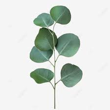
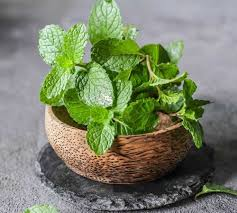
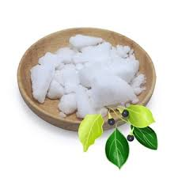
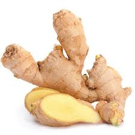
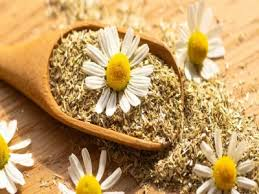

مكونات AFIFA BIO الطبيعية

زيت الأوكالبتوس
يساعد على تهدئة آلام العضلات والمفاصل بفضل خصائصه المضادة للالتهابات والمسكنة.

زيت النعناع
يحتوي على المنثول الذي يساعد على تخفيف آلام العضلات ويحسن الدورة الدموية.

زيت الكافور
يستخدم لخصائصه المسكنة والمضادة للالتهابات. يساعد في تخفيف التورم والألم.

زيت الزنجبيل
يدفئ العضلات ويخفف من التشنجات. مثالي لتخفيف آلام العضلات بعد التمارين.

زيت البابونج
معروف بخصائصه المهدئة والمضادة للتشنج، يساعد على استرخاء العضلات المتصلبة.